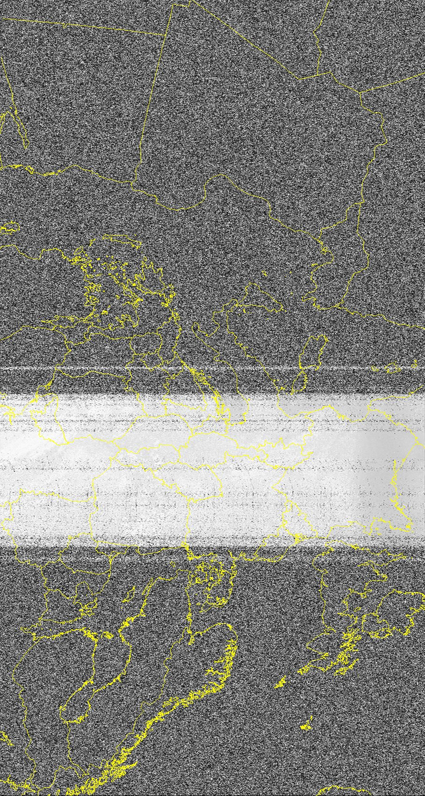

Project overview
For an extracurricular ground station, I built a low-cost antenna tracking interface around a Raspberry Pi. The aim was to connect satellite-tracking software to a custom actuator without an off-the-shelf controller compatible with Gpredict.
The solution separates a Python socket bridge from a C++ hardware control process.
System architecture
target azimuth / elevation
rotator protocol emulator
servo PWM
- The Python bridge listens for rotator-protocol messages and extracts azimuth/elevation commands calculated by Gpredict.
- A text buffer decouples command reception from the actuator loop.
- The C++ application reads updated angles, applies the experimental servo mapping and sends PWM commands via
pigpio.
What the prototype demonstrates
This project gave me practical experience in TCP sockets, embedded Linux, software-to-hardware integration and dealing with a missing hardware protocol interface.
Satellite reception example

I also include this real received-data example as part of the broader ground-station work. The recording was made with an amateur setup in the mountains near my home and contains noticeable interference.
Code excerpts
The original code excerpts from my earlier portfolio are available for reference. They document the prototype rather than a production-ready antenna control package.